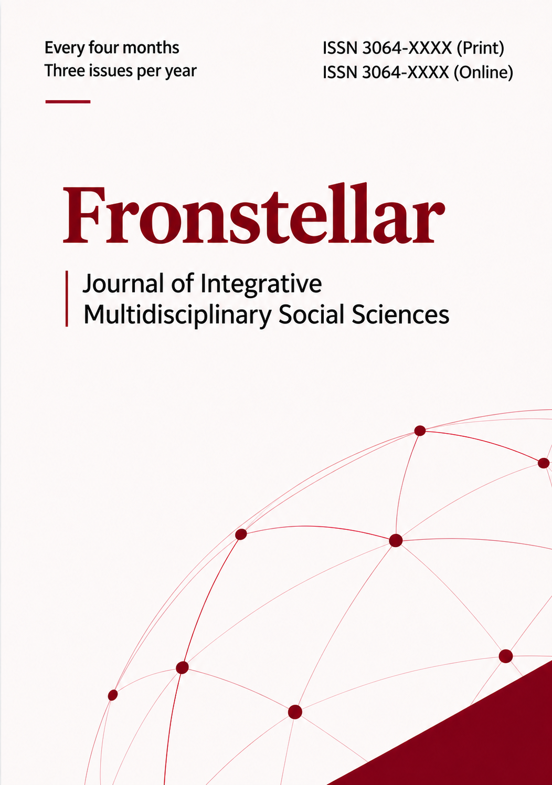

Fronstellar
Journal
Fronstellar Journal of Integrative Multidisciplinary Social Sciences
Bringing perspectives together to understand society and social questions more fully.
Browse articles
- Publisher
- Fronstellar Institute
- Article languages
- Indonesian & English
- Publication frequency
- Every four months
Across disciplines.
Fronstellar Journal focuses on integrative social sciences. It is being prepared as a space for research connecting approaches, concepts, and methods to examine social life.
Read the aims and scope ↗The first article
Manuscript preview · Not yet assigned to an issue
A manuscript by Fahmi Achmad Darojat on medical students’ seating preferences is now available for review, with its bilingual abstracts and original PDF.
View first articleBehind the journal.
Yoga Hediasa, M.Hum serves as Editor in Chief. Fahmi Achmad Darojat supports the journal as Technical Support and Layout Editor.
Meet the editorial team ↗